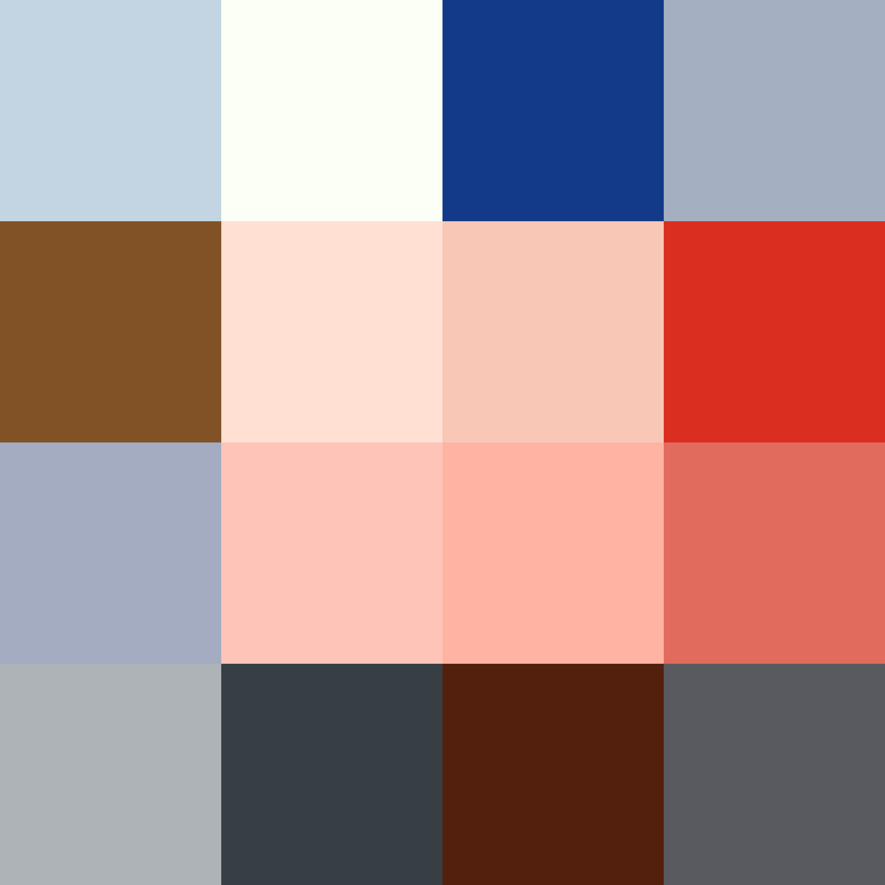

motemen.github.com
Project maintained by motemen
Hosted on GitHub Pages — Theme by mattgraham
Links
Products
-
polka Local web DJ
- Node.js
- Socket.IO
- YouTube/SoundCloud
-
Wight Manimulates PhantomJS from Perl
- Perl
- Scraping/Webapp testing
- PhantomJS
- Poltergeist
- AnyEvent, Coro
- WebSocket
-
htmlcat Renders standard input in your browser
- Perl
- JavaScript
- Server-Sent Events
-
Teto Web audio streaming server
- Perl
- Plack/PSGI streaming
- AnyEvent, Coro
- DAAP
- ffmpeg
-
PicTumblr Android Tumblr app
-
Kindlenap Generates HTML files from a web page for kindlegen
- Perl
- Supports AutoPagerize SITEINFO
-
modoi Futaba channel (http://www.2chan.net/) proxy
- Perl
- Pluggable components
- Hyper estraier-powered search
- Image caching
- Automatic refetching
-
euler-getter A web implementation of Euler Getter
-
JScriptHTTPGateway Invoke Windows JScript via HTTP (e.g. curl)
-
jusk A study implementation of JavaScript by Haskell
Presentations